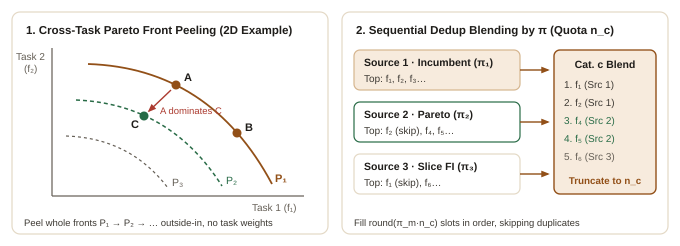
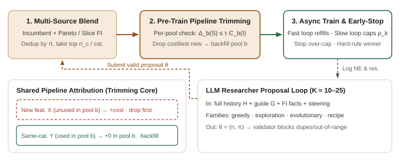
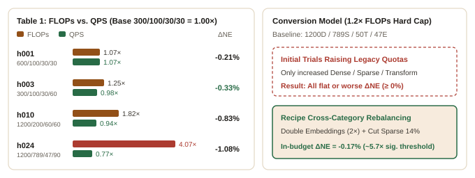
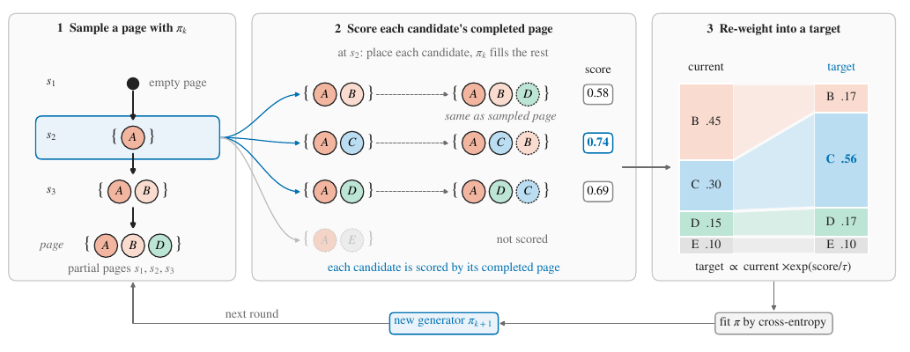

Contents · 5 sections
1Four Feature Cost Profiles and Two-Stage Cross-Feature Creation2Multi-Task Feature Ranking and Cross-Source Blending3Constrained Search and Shared Pipeline-Cost Trimming4Offline Exploration, Pipeline Trimming, and Online Empirical Results5Ablation Gaps and Engineering Deployment BoundariesSHARE
Deconstructing Meta's Ads Ranking Feature Optimization System: Cost-Aware Agentic Search and Shared Pipeline Trimming
On large-scale ads and recommendation platforms, production typically runs an expansive fleet of ranking models—serving distinct traffic surfaces and conversion objectives—each selecting its own input subset from a shared pool of tens of thousands of features. Historically, most teams have inherited the feature list of the incumbent model (the model currently serving in production) and applied manual additions or removals. While recent works have applied LLMs to feature selection, feature engineering, and end-to-end ML experimentation, the paper notes that these works study a single model in isolation. In contrast, this system optimizes features across a fleet while incorporating two classes of online cost constraints. One is per-model online serving-cost caps covering throughput in QPS, latency, and memory. The other is upstream feature pipeline budgets shared across models, covering processing queries, source data storage, and training log ingestion and storage. In arXiv:2611.26531 (Cost-Aware Agentic Feature Optimization System for Fleet-Scale Ranking Models), Meta presents an engineering solution whose core insight is not letting an LLM pick features end to end, but rather redrawing the boundary of responsibilities across feature creation, ranking/blending, and constrained search around those two cost structures. Understanding why this system works starts with examining the physical cost differences across feature categories in hardware and storage.
Four Feature Cost Profiles and Two-Stage Cross-Feature Creation
The paper decomposes the ranking model input layer into four feature categories based on physical overhead. Dense features are fed as real-valued scalars into an MLP and carry the lowest cost per slot. Sparse features are variable-length lists of IDs that look up internal embedding tables inside the model, dominating model memory and incurring table-lookup cost. Embedding features are fixed-length vectors produced upstream that require no internal embedding table; however, storing and logging these large vectors is expensive, and inference incurs a per-feature MLP projection matrix multiplication. Transform features (typified by cross features) are derived inside the model from features it already receives, presupposing that their underlying raw inputs remain in the model. However, after independent category selection or Trimming changes the inputs, how a transform keeps its dependency on raw inputs remains a mechanism gap: if quota truncation or Trimming removes a raw input that a transform depends on, it is unspecified whether that dependency is retained, the transform is dropped, or the raw input is still read and charged. Therefore, zero added upstream overhead cannot be assumed unconditionally after independent per-category selection or replacement. Different deployment hardware (such as GPU vs. CPU serving) exhibits different sensitivities to table-lookup versus matrix-multiplication overhead, so whether sparse or embedding features weigh more heavily on serving throughput depends on the setting (the paper notes this hardware dependence, though the experimental section does not include a GPU vs. CPU comparison). At the same time, the four categories follow distinct diminishing-returns curves. Simply scaling up feature counts proportionally therefore tends to hit resource caps prematurely; improving a model usually requires rebalancing volume across categories.
Among these four categories, in-model cross features strongly improve click and conversion prediction, yet they also cause the candidate space to explode most rapidly. The paper generalizes cross features to feature transforms , which apply an operator (such as n-gram, ID matching, or bucketization) to a subset of the input pool . Even restricting attention to bigrams alone, the candidate transform set grows to , which the paper notes reaches tens of millions. Because the downstream Feature Ranking (FI) pipeline must train and evaluate a full model over all candidates simultaneously, feeding directly into it triggers out-of-memory (OOM) failures well before reaching millions of candidates.
To handle this, the system splits cross-feature generation and selection into three tightly coupled stages:
- LLM Retrieval (Recall): The platform maintains a fleet-wide Signal database storing static metadata for each raw feature (name, lineage, aggregation window, coverage, and an LLM-written semantic description) alongside model-specific statistical signals (importance and interaction scores; the exact formula for interaction scores is not in the public materials). The paper states that a shared retrieval LLM scores each candidate in a single forward pass to retain a shortlist of the top candidates. However, it does not disclose how raw-feature signals, candidate transforms , and target-model context are combined into that single-pass scoring input, leaving the full input path for scoring across different target models unspecified. It also does not disclose the batching or coarse pre-filtering architecture over tens of millions of candidates, nor the concrete magnitude of .
- FI Re-ranking (Precision): The shortlisted cross-feature candidates are folded directly into the model's full feature pool and passed to the Feature Ranking pipeline in the next section to evaluate their true importance scores uniformly, rather than running a separate redundant FI pass.
- Cross-Model Continual Fine-Tuning: The FI scores assigned by Feature Ranking to shortlisted cross features across many models are fed back as supervision labels to continuously fine-tune the single retrieval LLM shared across the fleet. This is intended to improve feature creation as more models are optimized, though how it conditions on different target models and its standalone gain are not disclosed in the paper.
Once LLM retrieval narrows the tens of millions of candidate transforms to and merges them into the base pool, the combined eligible pool can be scored by training a single offline full-pool ranking model once. For a production serving model, however, that pool still exceeds what any single model can use under its resource constraints. Feature Ranking and Feature Blending therefore establish a value ordering across the pool before constrained search selects a bounded subset.
Multi-Task Feature Ranking and Cross-Source Blending
The Feature Ranking stage takes a straightforward approach: it trains a single offline full model once on the complete candidate pool eligible under data-governance and privacy constraints (including the newly retrieved cross features) and computes normalized feature-importance scores (summing to , both per task and in aggregate). Although the paper categorizes this non-LLM algorithmic module as a "deterministic tool" in contrast to agentic reasoning, its underlying estimators still rely internally on random shuffling or Monte Carlo sampling approximations. The lightest option, permutation importance, randomly shuffles a feature's values across an evaluation batch and measures the resulting loss increase, but systematically underrates correlated features. The system therefore also integrates Shapley value sampling and Kernel SHAP (a Shapley-value attribution method). The former averages marginal loss reductions across randomly sampled feature orderings, while the latter estimates Shapley values via weighted linear regression over sampled feature coalitions. Furthermore, any of these estimators can run in a segment-aware variant that trains and scores separately on a small but commercially high-value traffic slice (such as high-value users in top revenue buckets) to surface features that global importance can bury. In other words, global ranking requires training one full model once, whereas enabling slice evaluation requires additional training and scoring on the corresponding traffic slice (the additional compute share of slice variants is not in the public materials).
Once per-task or slice-level scores are computed across estimators, the Feature Blending stage resolves two ranking-aggregation problems. The first is cross-task merging: production ads ranking models frequently predict outcomes (such as clicks and conversions) simultaneously, where per-task losses differ in magnitude and even task type (classification vs. regression). A weighted sum of per-task scores depends on subjective hand-tuned task weights that are hard to maintain across model refreshes. The system bypasses task weights using cross-task Pareto optimality: represent feature 's importance across tasks as the vector ; feature dominates if for all tasks with strict inequality for at least one task. Undominated features form the first Pareto front ; setting them aside and peeling recursively produces , stopping at the smallest satisfying for budget . Because dominance compares scores strictly within each task, the comparison step requires no cross-task normalization and avoids burying a feature that matters strongly to a single task under cross-task weights; however, non-domination does not guarantee final selection, as truncation within the final front (whose rule is undisclosed) and subsequent multi-source mixture ranking and quota cutoffs can still drop it.
The second problem is cross-source blending: to avoid bias from any single ranking lens, the system mixes source rankings according to a mixture vector (with ). Sources include the production-proven incumbent model's ranking alongside global, segment-specific, per-task, or cross-task Pareto rankings produced by the FI estimators above. Traversing the sources in a fixed preset order, each source contributes its highest-ranked features not yet selected until it has filled slots, ensuring no feature is selected twice. In the downstream search stage, this blending procedure runs independently per feature category, truncating each category at its quota . Three implementation details remain unspecified in the paper: (1) how ties or excess features inside the final front are ordered and truncated when the cumulative count exceeds the budget, (2) the exact ranking source of the incumbent baseline list itself, and (3) potential order bias against later sources introduced by fixed-order deduplication. Hoot says



Source
Paper diagramEven with deduplicated blended rankings for each of the four categories, taking top features up to a count cutoff still cannot satisfy per-model online serving caps and shared upstream pipeline budgets simultaneously. Meanwhile, because each industrial ranking training run takes hours to days, exhaustive search over tens of thousands of discrete feature subsets is out of the question. Bringing expensive training evaluations and both hard constraints into a single decision loop first requires drastically reducing the dimensionality of the search space.
Constrained Search and Shared Pipeline-Cost Trimming
The constrained search module compresses tens-of-thousands-dimensional discrete feature selection into a very low-dimensional hyperparameter optimization problem. Let denote the four feature categories, the candidate pool for category , the banned features in search (covering privacy, compliance, and coverage restrictions), and the first features chosen by blending under mixture . Once the per-category volume vector and mixture are specified, the entire input feature set is uniquely determined by :
The optimization objective is to minimize Normalized Entropy (NE, normalized log-loss commonly used in ads classification; lower is better, and under the paper's convention an NE reduction larger than relative to the incumbent—i.e., —is statistically significant), while keeping every per-model serving resource metric within its cap relative to the incumbent configuration :
Two modeling conventions here deserve attention. First, while earlier sections emphasize multi-task ranking models (spanning both classification and regression heads), the search objective collapses to a single scalar ; whether this takes only the primary classification task's NE or a multi-task aggregate is left implicit. Second, while the introduction defines per-model serving cost across throughput, latency, and memory, the explicit constraint set above enters only throughput and memory, omitting latency directly. Throughput is proxied by per-example inference FLOPs (e.g., ) or represented as so its cap forms an upper bound. Later, the empirical section reports only FLOPs and measured QPS, without disclosing measured memory or latency figures. Because each evaluation takes hours to days, a search session affords only total trials, with at most running concurrently. To avoid unpredictable extremes, each category's volume is also kept within an empirical range around the incumbent as a search heuristic.
Notice that the constraint set bounds only per-model serving cost; shared upstream pipeline cost is not deferred to post-training constraint checking. The reason is pragmatic: upstream pipeline costs are table lookups that can be computed before training, avoiding hours of wasted compute before discovering a budget violation. Here the paper leverages the shared cross-model cost-attribution structure: a feature's upstream pipeline cost is shared across all budget pools whose models use it. Each budget pool is an upstream feature pipeline budget account partitioned by business or billing ownership, and a single model may be charged to multiple associated budget pools. However, the paper discloses neither the cross-pool cost-splitting weight formula nor whether a feature's attributed cost is recomputed when the set of budget pools using it changes. Within any single budget pool , the paper states that a feature already used by another model adds zero pipeline cost to that pool; only when no other model under budget pool uses that feature does adding or dropping it change pool 's attributed cost.
The paper requires every trial to satisfy for each budget pool the model is charged to. Here is the change in pool 's attributed pipeline cost when replacing the incumbent feature set with , and is the pipeline cost attributed to pool for . Setting holds that budget at the incumbent's cost, permits a bounded increase, and requires a net saving. Under the simplifying assumption that per-pool attributed costs remain fixed during candidate changes, letting denote the set of features already used by other models under pool , the local single-pool add/remove cost delta can be written as:
Before training starts, the deterministic Trimming module scans , removes costly newly added exclusive features from most expensive first, and refills each vacated slot with the highest-ranked feature of the same category in the blended ranking that is already used by another model in the current budget pool (, adding zero marginal cost to pool ). Consequently, per-category counts stay unchanged, and inference FLOPs remain essentially untouched. However, the described procedure does not by itself prove that every associated budget pool is jointly controlled before training, leaving three undisclosed mechanism boundaries. First, this refill guarantees zero incremental cost only on the current budget pool , assuming and sufficient same-category candidates. When a model is charged to multiple budget pools, refilling for a later pool may introduce a feature unused in an earlier pool and re-violate it. While the paper requires every associated budget to be feasible, it does not disclose how multi-budget feasibility is jointly maintained. Second, the paper discloses neither the cross-pool allocation formula nor whether is recomputed when the set of using pools changes, so a local add/remove delta alone cannot guarantee that every associated pool stays controlled. Third, if and retains many incumbent-exclusive features, removing only newly added exclusive features can at best return to . How leftover infeasible cases are resolved after Trimming refill remains a pipeline-cost trimming gap; later experiments are conducted solely at .
With the search space compressed and pre-training pipeline Trimming in place, finding meaningful gains within expensive trials depends on how the LLM Researcher collaborates with the deterministic orchestration framework. The system draws a strict boundary of responsibilities: the LLM only proposes hypotheses from history, while deterministic code executes all validation, trimming, scheduling, and final winner selection. Running inside a single long-context session, the Researcher observes the full trial history , a tuning guide (containing per-category empirical ranges, priorities, and expected and FLOPs per unit), statistical summaries computed from the FI ranking (facts computed from the FI ranking; specific fields are not listed), and free-text operator steering. Each proposal carries a written rationale and belongs to one of four behavior families: greedy (local refinement around strong trials), exploration (stepping outward to probe boundaries), evolutionary (combining or mutating earlier arms), and recipe (a predefined structured move—for instance, on models with roughly more sparse than embedding features, dropping low-ranked sparse features and adding highly ranked unused embedding features).
Every proposal must clear a deterministic validator (blocking duplicates, out-of-range proposals, and out-of-scope parameters) and pre-training Trimming before entering training. After submitting the initial valid trials, scheduling runs on a dual-cadence asynchronous loop. A fast loop runs every to check concurrency slots and prompt the Researcher for a new hypothesis as soon as a trial finishes or fails. A slow loop runs every to periodically measure NE and resource metrics of running trials, immediately early-stopping any trial that exceeds a cap and updating the NE–resource Pareto frontier. While theoretical FLOPs can be estimated statically, training NE trajectories and measured serving metrics such as QPS require periodic evaluation. However, the paper does not discuss why purely static FLOPs and memory checks are not moved completely pre-launch. Once all trials reach terminal states, the winner is chosen by a fixed deterministic rule (satisfying all resource caps and strictly beating incumbent NE, otherwise falling back to the incumbent), which the LLM cannot override. Hoot says


Source
Paper diagramExpand Reference: Algorithm 1 Asynchronous Constrained Search and Trimming Pseudocode
Below is Python-style pseudocode summarizing the dual-loop asynchronous scheduler and pre-training Trimming procedure from Algorithm 1, using the paper's notation (fi_facts come from prior FI ranking). Note that the paper only describes the single-pool step of removing costliest additions and backfilling with same-category features already used in pool . It does not disclose cross-pool cost recomputation, joint multi-budget feasibility maintenance, or the algorithm for leftover infeasible cases. Because the paper requires every trained trial to satisfy all charged budgets, the pseudocode returns None rather than releasing an infeasible set to training:
def trim_pipeline_cost(S_theta, blended_rankings, budget_pools, incumbent_I, tau):
"""Schematic of the paper's single-pool trimming step: drop costliest new exclusive features
and backfill with same-category features already used in the current pool.
Note: cross-pool cost recomputation, joint multi-budget maintenance, and leftover infeasible
handling are undisclosed; because every trained trial must satisfy all charged budgets,
unmet cases return None rather than being released to training."""
S = copy_by_category(S_theta)
for b in budget_pools:
limit = tau * attributed_cost(b, incumbent_I)
# Refill guarantees zero incremental cost only on current pool b (cross-pool c_b(f) recomputation is undisclosed)
while delta_cost(b, S, incumbent_I) > limit:
costly_adds = [
(cat, feat, attributed_marginal_cost(b, feat))
for cat, feats in S.items()
for feat in feats
if feat not in incumbent_I and not used_by_other_models(b, feat)
]
if not costly_adds:
# Algorithm for leftover infeasible cases (e.g., tau < 0 after costly_adds is empty) is undisclosed; do not release to training
return None
cat, drop_feat, _ = max(costly_adds, key=lambda x: x[2])
# Refill with the highest-ranked same-category feature already used in current pool b
replacement = next(
(f for f in blended_rankings[cat]
if f not in S[cat] and used_by_other_models(b, f)),
None,
)
if replacement is None:
return None # Fallback when no same-category in-pool replacement exists is undisclosed; do not release to training
S[cat].remove(drop_feat)
S[cat].add(replacement)
# Every charged budget must be feasible, but joint reconciliation if a later pool re-violates an earlier one is undisclosed
if not all(delta_cost(b, S, incumbent_I) <= tau * attributed_cost(b, incumbent_I) for b in budget_pools):
return None
return S
def async_feature_search(theta_0, I, K, W, rho_caps, tau, guide_G, fi_facts):
H = [] # Full trial history (retained in the Researcher's context)
running, submitted = [], 0
# 1. Initially fill all W concurrency slots
while len(running) < W and submitted < K:
h = researcher_propose(H, guide_G)
if validate(h, H, guide_G):
S_h = trim_pipeline_cost(build_subset(h.theta), h.rankings, h.budgets, I, tau)
if S_h is not None:
running.append(launch_async_train(h, S_h))
submitted += 1
# 2. Dual-cadence async loop: fast loop refills slots, slow loop monitors and early-stops
while running or submitted < K:
wait_fast_interval()
finished, running = partition_terminal(running)
H.extend(finished)
if slow_interval_elapsed():
for job in list(running):
ne_h, res_h = measure_metrics(job)
if any(res_h[k] > rho_caps[k] * res_0[k] for k in rho_caps):
early_stop(job)
running.remove(job)
H.append(mark_early_stopped(job, ne_h, res_h))
update_pareto_frontier(H)
while len(running) < W and submitted < K:
h = researcher_propose(H, guide_G, fi_facts, operator_steering())
if validate(h, H, guide_G):
S_h = trim_pipeline_cost(build_subset(h.theta), h.rankings, h.budgets, I, tau)
if S_h is not None:
running.append(launch_async_train(h, S_h))
submitted += 1
# 3. Deterministic hard-rule winner selection (cannot be overridden by the LLM)
feasible = [
h for h in H
if all(h.res[k] <= rho_caps[k] * res_0[k] for k in rho_caps) and h.ne < ne_0
]
return min(feasible, key=lambda h: h.ne) if feasible else (theta_0, I)While this asynchronous constrained search and pre-training trimming loop fits together cleanly on paper, understanding how much gain it actually delivers on production models—and how costs trade off against accuracy—requires unpacking the paper's offline and online empirical results.
Offline Exploration, Pipeline Trimming, and Online Empirical Results
The paper first walks through a complete 25-trial search trajectory, with every trial trained on the same data window as the baseline. That baseline model starts with feature volumes of 300/100/30/30 (listed throughout as dense / sparse / transform / embedding). One experimental caveat must be highlighted upfront: all feature-search experiments reported in the paper tune only the per-category volumes , keeping the blending mixture fixed (the authors explicitly note that mixture tuning is implemented but not yet evaluated). In addition, it is left implicit whether strict hard caps were enforced during this 25-trial run—given that h024 reaches FLOPs and drops to QPS, this run illustrates the full NE–QPS frontier under loose constraints or exploration mode. The selected frontier trials from Table 1 are summarized below:
| Trial | Feature Volumes (D/S/T/E) | Behavior Family | Relative FLOPs | Relative QPS | Engineering Observation | |
|---|---|---|---|---|---|---|
| Baseline | 300 / 100 / 30 / 30 | — | — | Baseline control | ||
h006 | 150 / 50 / 15 / 15 | exploration | Halving all categories gives highest QPS but severe accuracy loss | |||
h001 | 600 / 100 / 30 / 30 | greedy | Doubling dense alone lifts FLOPs slightly while measured QPS actually rises | |||
h003 | 300 / 100 / 30 / 60 | exploration | Doubling embeddings alone yields strong gain with only a 2% QPS drop | |||
h010 | 1200 / 200 / 60 / 60 | greedy | Scaling all four categories together reveals a cost-efficiency knee | |||
h024 | 1200 / 789 / 47 / 90 | evolutionary | Late evolutionary best accuracy; FLOPs surge while QPS declines more gently |
Reading across this table reveals two patterns that run counter to common intuition. First, theoretical FLOPs and measured online QPS are strongly nonlinear: h001 doubles dense features to 600, raising FLOPs to , yet measured QPS rises rather than falls to (error bars in Figure 2(a) represent standard deviation over 3 runs; exact percentage variances and a further attribution of this upward fluctuation are not given). Meanwhile, h024 expands all four categories to FLOPs while retaining measured QPS. This demonstrates that relying solely on FLOPs as a proxy for serving throughput introduces substantial bias across operating regimes, explaining why the system supports placing constraints directly on . Second, comparing h001 and h003, doubling 300 dense features brings NE, whereas doubling just 30 embedding features to 60 delivers NE at nearly unchanged QPS ().
A second, more targeted piece of evidence comes from a separate production per-event conversion model with an already-large incumbent footprint (1200/789/50/47) operating under a hard FLOPs cap. On this model, every initial trial that only increased dense, sparse, or transform volume was flat or worse on NE. Only when a recipe trial doubled embeddings while cutting sparse features by did the model reduce NE by within the FLOPs cap (roughly the significance threshold). This indicates that on already high-volume production models, simply adding more dense, sparse, or transform features yields little return; cross-category resource rebalancing is the primary driver of gains. Hoot says


Source
Paper diagramZooming out to fleet-level aggregate results, the paper reports three sets of production metrics covering offline constrained search, shared pipeline trimming, and online A/B tests, summarized below:
| Evaluation Axis | Coverage | Baseline / Setup | Core Gain | Resource Cost & Variance Bounds |
|---|---|---|---|---|
| Constrained Search | 7 high-impact production models | Each model's incumbent & resource caps (fixed , tuning only) | Average | All within per-model budgets; async trials |
| Shared Pipeline Trimming | 6 production models | Untrimmed, importance-only control (trimmed group set at ) | Paper reports all 6 evaluated models within budget at ; vs. untrimmed control, attributed pipeline cost cut by on avg. (up to ) | Identical per-category counts, FLOPs within ; paper reports main-task loss regression (within run-to-run noise) |
| Online A/B Launch | >6 months continuous operation, multiple launches | Production incumbent models | Primary online metric improved by | Paper does not disclose metric name, direction, per-launch average vs. cumulative basis, or net resource change |
The baseline convention for shared pipeline trimming merits explicit distinction: the untrimmed control selects features purely by importance without trimming, which drives up upstream attributed cost when high-scoring new features are added. The paper reports that setting in the trimmed group brings these 6 evaluated models back within their budgets, cutting attributed pipeline cost by on average and up to relative to the untrimmed control. How many associated budget pools these models spanned, and whether the trimmed group achieved any net reduction below the incumbent itself, are not in the public materials. Taken together, these three sets of results show that the system has closed the loop in production across offline volume search, shared pipeline trimming, and online deployment, with pre-training trimming lowering upstream pipeline cost while keeping main-task loss regression within the run-to-run noise bound.
Ablation Gaps and Engineering Deployment Boundaries
Examining this systems paper from the perspective of an external team evaluating adoption or reproduction, two categories of critical information remain either unverified by ablations or undisclosed.
The first gap is that individual module contributions have not yet been ablated. Earlier sections highlight three major components—the continually fine-tuned cross-model cross-feature retrieval LLM, multi-task Pareto ranking combined with automated tuning of the blending weights , and segment-aware slice evaluation for high-value users in top revenue buckets—yet none of the three receives standalone ablation results in the experimental section. In particular, tuning is explicitly marked as "implemented but not yet evaluated," and the paper does not benchmark the LLM Researcher head-to-head against standard black-box optimizers (such as constrained Bayesian optimization or rule-based heuristics) under the same -trial budget. Consequently, the average NE improvement across 7 production models directly validates the aggregate effect of the LLM Researcher tuning four per-category feature volumes under fixed blending weights. Per-model strategy distributions or individual gains across those 7 models are not in the public materials. This leaves the incremental contributions of cross-model retrieval fine-tuning, Pareto blending, and slice evaluation to future ablation studies.
The second gap concerns missing key parameters for reproduction and compute budgeting. The underlying LLM model, its inference latency, and the retrieval cutoff size are omitted, as are the offline training and evaluation compute for one full-pool FI pass (especially Shapley sampling and Kernel SHAP) and its slice variants, as well as the GPU-hours saved by slow-loop early-stopping across trials. Likewise, it omits the per-model gain distribution and fallback/failure rate across the 7 high-impact models, along with the exact definition and statistical convention of the primary online metric in online A/B tests. For compute-constrained mid-sized teams, measuring the full offline compute ledger of "one full-pool FI evaluation plus a dozen or more ranking trials" beforehand is essential to ensure offline search overhead does not exceed online gains.
Despite these gaps, the paper offers clear architectural value for search, ads, and recommendation teams. Its most transferable lesson is not replacing traditional optimizers with an LLM, but using sharp engineering boundaries to contain LLM agent uncertainty. Specifically, it confines the LLM to proposing hypotheses from history while deterministic validators and hardcoded winner-selection rules provide hard guardrails. It also reduces tens-of-thousands-dimensional combinatorial selection to low-dimensional search via per-category quotas plus blending weights, and applies pre-training per-pool pipeline trimming through cross-model shared cost-attribution tables (though undisclosed details such as multi-budget joint feasibility maintenance, cross-pool cost recomputation, and feature dependency closure still need to be engineered by adopters). Teams of different scales should also separate the prerequisites when adapting these ideas. Even without introducing an LLM agent or a fleet-fine-tuned retrieval model, teams can first run "cross-category feature quota rebalancing + slow-loop resource early-stopping" via traditional constrained search or small-scale grid experiments. By contrast, the zero-marginal-cost reuse mechanism within "pre-training shared pipeline trimming"—backfilling with features already used in the same pool—relies on multiple models sharing the same feature pipeline budget pool.
How did this read for you?
Hoot made a note. Thanks for the feedback.
One tap, no sign-in; tap again to undo. Only anonymous counts are kept, never who you are.
Related papersMore from Paper Daily

Generative · 2026-11-23Learning Generative Ranking Policies for Whole-Page OptimizationItems on a recommendation page compete for attention and complement one another, so placing the individually best candidates side by side rarely yields the best page. Existing generative re-ranking either assigns one page-level score to every choice, or fits fixed target lists built before training that stop adapting as the generator improves. Given a fixed evaluator, Meta trains the generator in… Personalization · 2026-11-12Exploiting Feature-invariant Scaling Laws for Efficient A/B Experimentation in Recommendation SystemsAdd a feature or change the architecture of a recommendation model, and a small-scale experiment may say it does nothing, while full-scale training shows it helps. The Meta authors hit exactly this on an LLM recommender: adding movie genres to the prompt lowered HR@10 at small scale and clearly raised it at full scale. They found that, whether a change helps or hurts, the model's validation loss…
Personalization · 2026-11-12Exploiting Feature-invariant Scaling Laws for Efficient A/B Experimentation in Recommendation SystemsAdd a feature or change the architecture of a recommendation model, and a small-scale experiment may say it does nothing, while full-scale training shows it helps. The Meta authors hit exactly this on an LLM recommender: adding movie genres to the prompt lowered HR@10 at small scale and clearly raised it at full scale. They found that, whether a change helps or hurts, the model's validation loss… Personalization · 2026-09-30HELIX: Purified and Unified - Rethinking Feature Interaction and Sequence Modeling for Large-Scale RecommendationDeep dive: HELIX: Purified and Unified - Rethinking Feature Interaction and Sequence Modeling for Large-Scale Recommendation.
Personalization · 2026-09-30HELIX: Purified and Unified - Rethinking Feature Interaction and Sequence Modeling for Large-Scale RecommendationDeep dive: HELIX: Purified and Unified - Rethinking Feature Interaction and Sequence Modeling for Large-Scale Recommendation. Personalization · 2026-08-19UniDot: A Unified Network for Sequence Modeling and Feature Interaction in Large-scale RecommendationDeep dive: UniDot: A Unified Network for Sequence Modeling and Feature Interaction in Large-scale Recommendation.
Personalization · 2026-08-19UniDot: A Unified Network for Sequence Modeling and Feature Interaction in Large-scale RecommendationDeep dive: UniDot: A Unified Network for Sequence Modeling and Feature Interaction in Large-scale Recommendation.- Personalization · 2026-10-29Exploratory creative pre-ranking: Hierarchical empirical-Bayes Thompson sampling for real-time creative optimizationAI-generated content makes it easy for advertisers to produce many creatives, but each gets very few impressions. This Roblox paper adds a creative pre-ranking layer between recall and ad ranking. The historical play rate μ of a new creative's campaign, game and target audience serves as the prior mean, and the prior strength κ is computed in closed form from the variance of true differences amon…
 Personalization · 2026-08-04GEM Training: How Meta Doubled the Efficiency of Its LLM-Scale Ads Foundation ModelDeep dive: GEM Training: How Meta Doubled the Efficiency of Its LLM-Scale Ads Foundation Model.
Personalization · 2026-08-04GEM Training: How Meta Doubled the Efficiency of Its LLM-Scale Ads Foundation ModelDeep dive: GEM Training: How Meta Doubled the Efficiency of Its LLM-Scale Ads Foundation Model. Personalization · 2026-11-17RACE: Ranking-Uncertainty Aware Capacity-Adaptive Customization for Efficient Sequential RecommendationOn-device sequential recommenders often compress every request with the same ratio, so simple interests waste compute and complex ones do not get enough capacity. Pruning and decomposition usually freeze the model and the input at a fixed size, and cannot adjust capacity to how hard the current behavior sequence is. The authors estimate difficulty from how stable the model's current ranking is, t…
Personalization · 2026-11-17RACE: Ranking-Uncertainty Aware Capacity-Adaptive Customization for Efficient Sequential RecommendationOn-device sequential recommenders often compress every request with the same ratio, so simple interests waste compute and complex ones do not get enough capacity. Pruning and decomposition usually freeze the model and the input at a fixed size, and cannot adjust capacity to how hard the current behavior sequence is. The authors estimate difficulty from how stable the model's current ranking is, t… Personalization · 2026-11-11Query- and Candidate-Aware Long User Sequence Modeling for Sponsored Product Ranking in SearchWhen sponsored search ranking uses long-term behavior, the usual approach searches history for actions similar to the candidate product, which can miss history highly relevant to the current query but only loosely tied to the candidate. Beyond recent behavior, Wayfair retrieves one batch of long-term actions by candidate and another by query, then feeds them to a Transformer with two context toke…
Personalization · 2026-11-11Query- and Candidate-Aware Long User Sequence Modeling for Sponsored Product Ranking in SearchWhen sponsored search ranking uses long-term behavior, the usual approach searches history for actions similar to the candidate product, which can miss history highly relevant to the current query but only loosely tied to the candidate. Beyond recent behavior, Wayfair retrieves one batch of long-term actions by candidate and another by query, then feeds them to a Transformer with two context toke…
Discussion
Add experiment details, reproduction notes or a different take. Requires a GitHub sign-in.
Loading the discussion…